Windows / Linux に CUDA Toolkit と cuDNN を導入し、ailia SDK で NVIDIA GPU による高速推論を有効にする手順を説明します。
CUDA Toolkit は NVIDIA が提供する GPGPU のためのプラットフォームです。cuDNN は NVIDIA が提供する DNN (ディープニューラルネットワーク) のためのライブラリです。ailia SDK はこれらを導入することで、NVIDIA GPU を使ったより高速な推論が可能になります。
cuDNN のバージョンに応じて、必要な CUDA Toolkit と ailia SDK の最低バージョンが異なります。
| cuDNN バージョン | 必要な CUDA Toolkit | 必要な ailia SDK |
|---|---|---|
| cuDNN 8.0.2 - 8.2.4 | CUDA Toolkit 11.0 以上 | ailia SDK 1.2.4 以降 |
| cuDNN 8.3.0 - 8.7.0 | CUDA Toolkit 11.5 以上 | ailia SDK 1.2.11 以降 |
| cuDNN 8.8.0 - 8.9.7 | CUDA Toolkit 12.0 以上 | ailia SDK 1.2.15 以降 |
| cuDNN 9.0.0 - 9.x | CUDA Toolkit 12.0 以上 | ailia SDK 1.4.0 以降 |
| cuDNN 10.0.0 - | CUDA Toolkit 12.0 以上 | ailia SDK 1.7.0 以降 (予定) |
CUDA Toolkit 公式ページ にアクセスし、「Download Now」をクリックします。
OS、アーキテクチャ、バージョン、インストーラタイプを選択します。
「Base Installer」の「Download」ボタンをクリックしてダウンロードします。
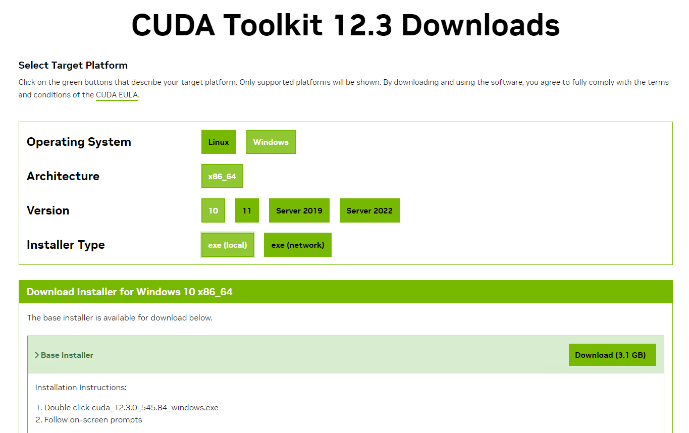
ダウンロードしたインストーラを実行します。展開先のワークディレクトリはデフォルトのままで問題ありません。
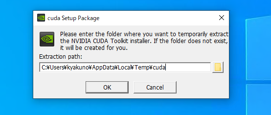
NVIDIA ソフトウェア使用許諾契約書を確認し、「同意して続行する」をクリックします。
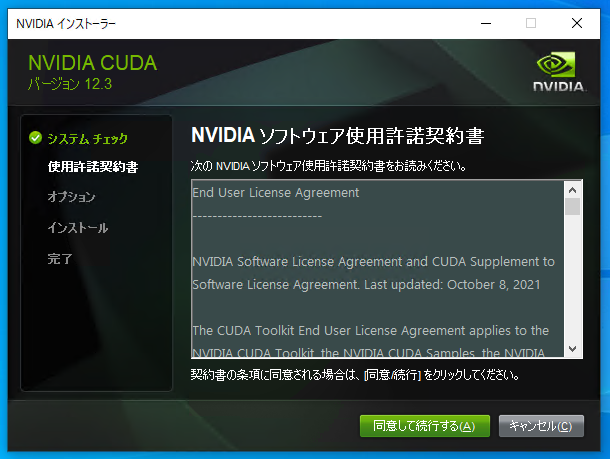
「カスタム (詳細)」を選択します。
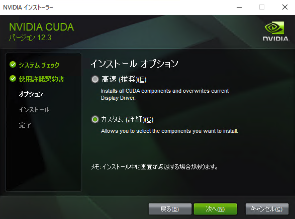
カスタムインストールオプションで、以下のコンポーネントを有効にします。
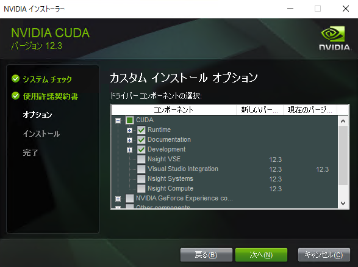
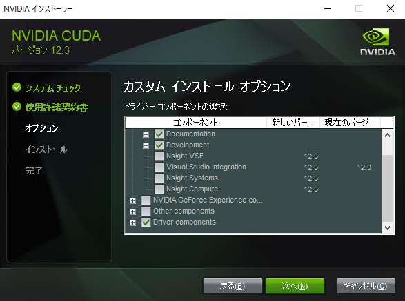
インストールが完了すると、インストールされたコンポーネントの一覧が表示されます。
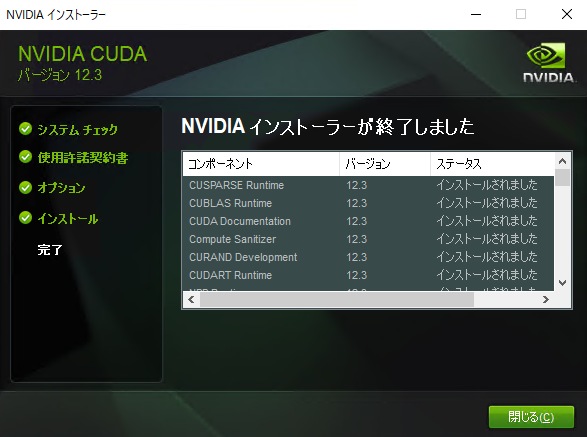
cuDNN 公式ページ にアクセスし、「Download cuDNN Library」をクリックします。
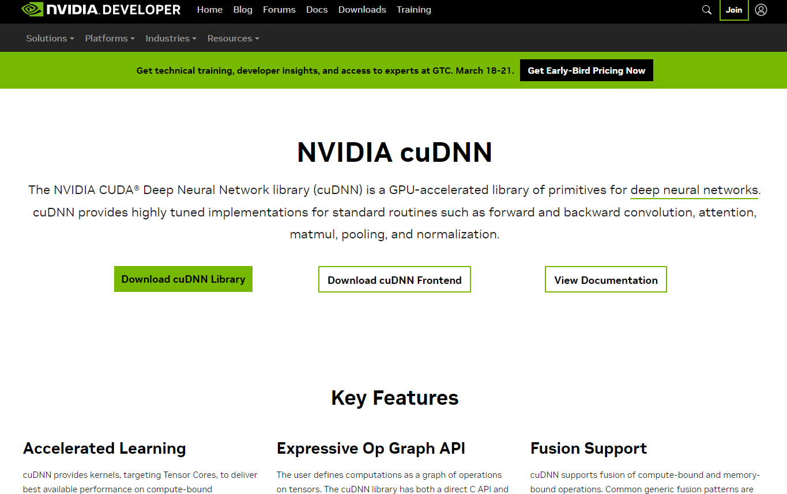
cuDNN のダウンロードには NVIDIA 開発者アカウントが必要です。アカウントをお持ちでない場合は新規登録してください。
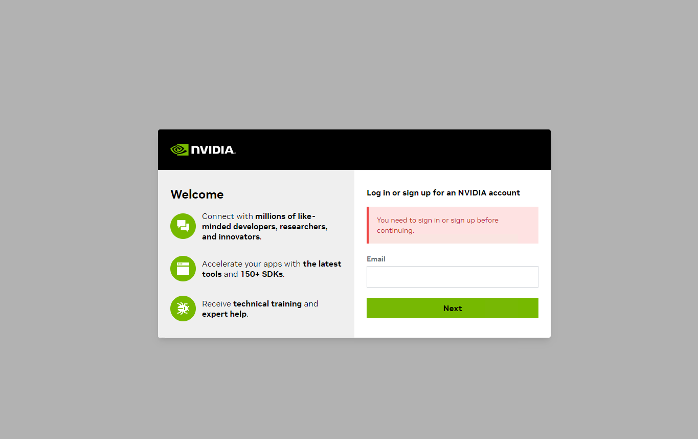
ログイン後、ダウンロードページで「Local Installer for Windows (Zip)」を選択してダウンロードします。
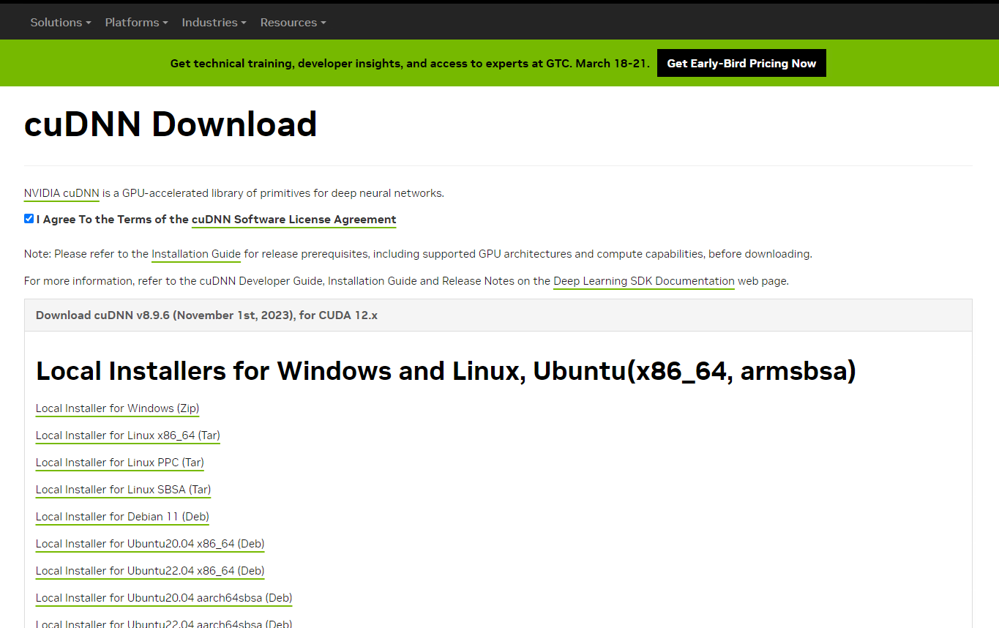
ダウンロードした zip ファイルを展開します。展開されたフォルダ (例: cudnn-windows-x86_64-8.9.6.50_cuda12-archive) を任意の場所 (例: C:\nvidia\) に配置します。
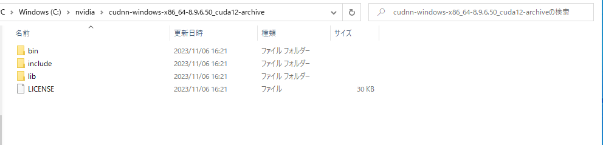
cuDNN の DLL をシステムから参照できるように、環境変数 PATH に cuDNN の bin フォルダを追加します。
Windows の「設定」→「システム」→「詳細情報」を開き、「システムの詳細設定」をクリックして「システムのプロパティ」を表示します。「環境変数」ボタンをクリックします。
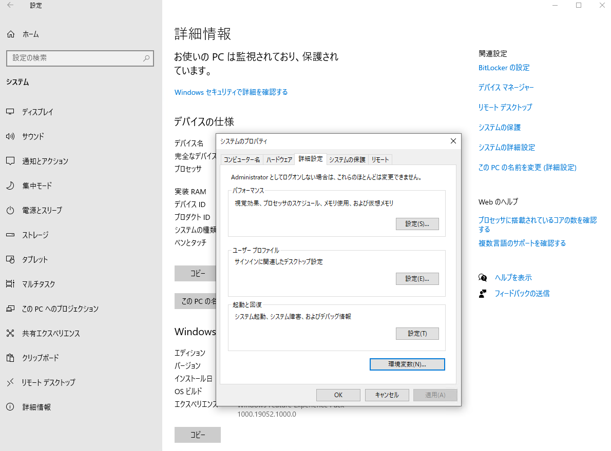
ユーザー環境変数の「Path」を選択し、「編集」をクリックします。「新規」をクリックして、cuDNN の bin フォルダのパスを追加します。
C:\nvidia\cudnn-windows-x86_64-8.9.6.50_cuda12-archive\bin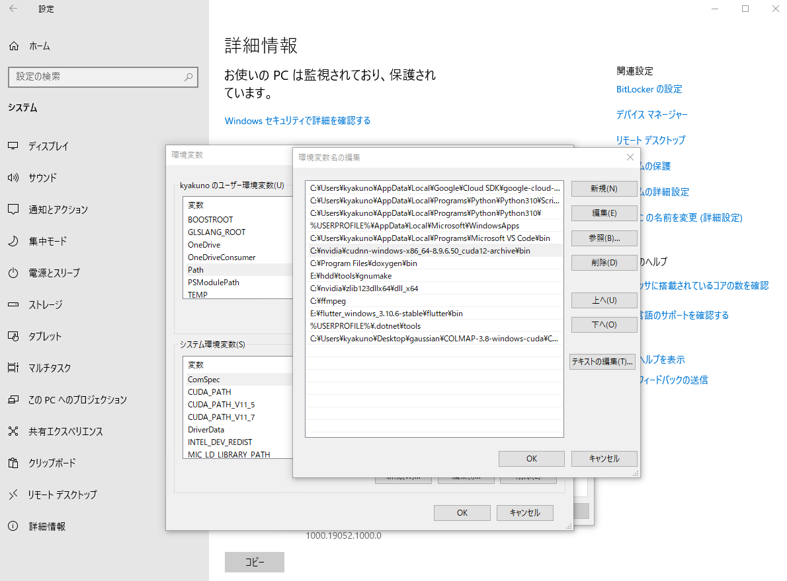
Windows 版の cuDNN 8.3 以上の利用には zlibwapi.dll が必要です。
ZLIB DLL ホームページ から zlib123dllx64.zip をダウンロードし、展開します。
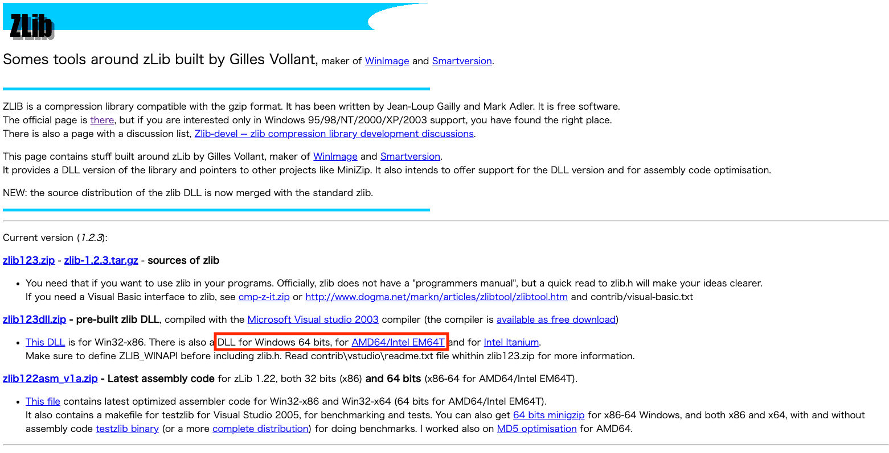
展開した中にある zlibwapi.dll を、PATH の通った場所にコピーします。cuDNN の bin フォルダにコピーするのが簡単です。
copy dll_x64\zlibwapi.dll C:\nvidia\cudnn-windows-x86_64-8.9.6.50_cuda12-archive\bin\まず、NVIDIA CUDA の apt リポジトリを追加します。CUDA Toolkit 公式ページ で Linux / x86_64 / Ubuntu / バージョン / deb (network) を選択し、表示されるコマンドに従います。一般的な手順は以下の通りです。
wget https://developer.download.nvidia.com/compute/cuda/repos/ubuntu2204/x86_64/cuda-keyring_1.1-1_all.deb
sudo dpkg -i cuda-keyring_1.1-1_all.deb
sudo apt updateリポジトリを追加したら、apt で CUDA Toolkit と cuDNN の両方をインストールします。
sudo apt install cuda-toolkit libcudnn9-cuda-12libcudnn8、cuDNN v9 + CUDA 12.x の場合は libcudnn9-cuda-12 を使用してください。apt search libcudnn で利用可能なパッケージを確認できます。
シェルの設定ファイル (~/.bashrc または ~/.zshrc) に CUDA のパスを追加します。
export PATH=/usr/local/cuda/bin:$PATH
export LD_LIBRARY_PATH=/usr/local/cuda/lib64:$LD_LIBRARY_PATHシェルをリロードし、インストールを確認します。
source ~/.bashrc
nvcc --versionNVIDIA Jetson デバイス (Jetson Orin Nano、Jetson AGX Orin など) では、NVIDIA JetPack SDK に CUDA Toolkit と cuDNN が最初から含まれています。追加のインストールは不要です。
プリインストールされているバージョンは以下のコマンドで確認できます。
nvcc --version
dpkg -l | grep cudnnailia-models のサンプルを使って、CUDA が認識されているかを確認します。
cd ailia-models/image_classification/resnet50
python3 resnet50.py --env_list出力に CUDA を含む環境が表示されれば成功です。
env[2]=Environment(id=2, type='GPU',
name='cuDNN-NVIDIA GeForce RTX 3080 (8.6, FP32)',
backend='CUDA', props=[])GPU の名称に「CUDA」が表示されていれば成功です。
env_id を明示的に指定してください。